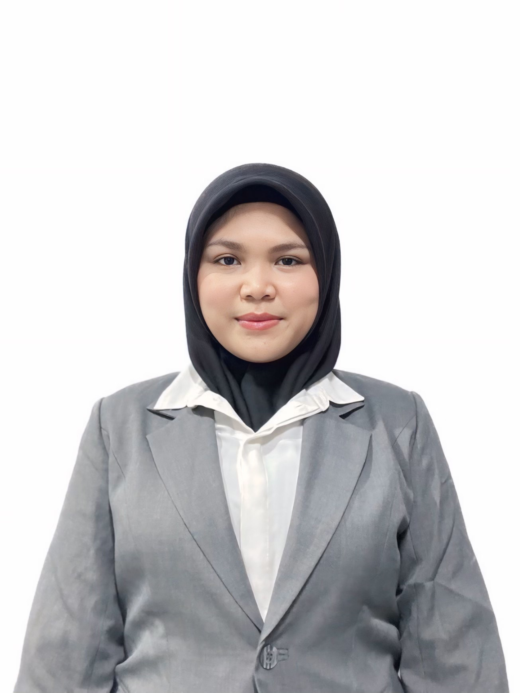

A Little
About Me.
Setiap perjalanan dimulai dari rasa ingin tahu. Ini sedikit cerita tentang apa yang saya pelajari, nikmati, dan harapkan ke depan.

Hi, I'm Aulia Hanna Shafiqa.
Saya adalah mahasiswa yang sedang menapaki perjalanan di dunia teknologi informasi. Saya menikmati proses memahami masalah, merancang solusi, dan belajar melalui proyek kecil yang terus berkembang.
Di luar kelas, saya senang mengeksplorasi ide kreatif, membaca hal baru, serta merapikan detail sampai terasa pas. Halaman ini adalah ruang yang terus saya perbarui seiring bertumbuh.
Small joys, big curiosity.
A direction, still unfolding.
Saya ingin terus belajar dan mengembangkan kemampuan di bidang teknologi informasi. Setelah lulus kuliah, saya berharap bisa bekerja di perusahaan seperti Telkom Indonesia, menambah pengalaman, dan menerapkan ilmu yang sudah saya pelajari selama kuliah.
Let's talk